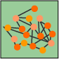

<div id="Layer5" style="position: absolute; left: 132px; top: 72px; width: 91px; height: 90px; z-index: 5; background: #FFFFFF">
  
</div>
<div id="Layer10" style="position: absolute; left: 132px; top: 162px; width: 739px; height: 259px; z-index: 10; background: #FFFFFF">
  <div align="left">
    <h2>LMU Links </h2>
    <ul><li><a href="http://cse.lmu.edu/">Frank R. Seaver College of Science and Engineering</a><br>
    </li>
      <li><a href="http://academics.lmu.edu/registrar/academicresources/academiccalendars/">Academic Calendar</a></li>
      <li><a href="http://sites.google.com/site/lmubioinformaticslabfall2008/Home">Bioinformatics Laboratory Course Google Site (Fall 2008) </a></li>
      <li><a href="http://www.openwetware.org/wiki/BIOL398-01/S10" target="_blank">Bioinformatics Laboratory OpenWetWare Site (Spring 2010)</a><br>
      </li>
      <li><a href="http://www.openwetware.org/wiki/BIOL367/F11">Bioinformatics Laboratory OpenWetWare Site (Fall 2011)</a> </li>
      <li><a href="http://www.openwetware.org/wiki/BIOL368/F14">Bioinformatics Laboratory OpenWetWare Site (Fall 2014)</a></li>
      <li><a href="http://xmlpipedb.cs.lmu.edu/biodb/fall2008">Biological Databases Course Wiki (Fall 2008) </a></li>
      <li><a href="http://xmlpipedb.cs.lmu.edu/biodb/fall2009">Biological Databases Course Wiki (Fall 2009)</a> </li>
      <li><a href="http://xmlpipedb.cs.lmu.edu/biodb/fall2010">Biological Databases Course Wiki (Fall 2010)</a></li>
      <li><a href="https://xmlpipedb.cs.lmu.edu/biodb/fall2013/index.php/Main_Page">Biological Databases Course Wiki (Fall 2013)</a></li>
      <li><a href="http://www.openwetware.org/wiki/BIOL398-01/S11">Biomathematical Modeling Course Wiki (Spring 2011)</a></li>
      <li><a href="http://www.openwetware.org/wiki/BIOL398-03/S13">Biomathematical Modeling Course Wiki (Spring 2013)</a></li>
      <li><a href="http://www.openwetware.org/wiki/BIOL398-04/S15">Biomathematical Modeling Course Wiki (Spring 2015)</a></li>
      <li><a href="https://mylmuconnect.blackboard.com/webapps/login/">Blackboard aka MyLMUConnect</a></li>
      <li><a href="http://www.bkstr.com/webapp/wcs/stores/servlet/HelpStoreInfoView?langId=-1&catalogId=10001&storeId=10690&storeId=10690&demoKey=d#hours">Campus Bookstore Information</a></li>
      <li><a href="http://www.lmu.edu/Assets/WEBADMIN+ONLY+-+Special+Content/Campus+Map+Full+Color.pdf">Campus Map</a> (PDF)</li>
      <li><a href="http://www.lmu.edu/resources/login.htm" target="_blank">CMS Login</a> (IronPoint)</li>
      <li><a href="https://my.lmu.edu/portal/page/portal/mylmu/intranet?page=https://intranet.lmu.edu/facstaff/busfin/controller/Business___Finance_Forms.htm">Controller's Office Business and Finance Forms</a> (requires MyLMU login credentials)</li>
      <li><a href="http://www.mapquest.com/maps/map.adp?country=US&addtohistory=&address=1+lmu+drive&city=los+angeles&state=ca&zipcode=90045&homesubmit=Get+Map">Directions to the LMU Campus</a> (mapquest)</li>
      <li><a href="http://www.lmu.edu/resources/directory.htm">Directory</a></li>
      <li><a href="http://cal.lmu.edu/">Events Calendar</a></li>
      <li><a href="https://my.lmu.edu/portal/page/portal/mylmu/intranet?page=https://intranet.lmu.edu/facstaff/academic/scse/Faculty_Resources.htm">Faculty Resource Page Login for the College of Science and Engineering</a></li>
      <li><a href="http://academics.lmu.edu/registrar/academicresources/finalexamschedule/">Final Exam Schedule</a></li>
      <li><a href="http://sites.google.com/site/lmuonthenatureofthingsspr09/">Honors 240-01 Course Google Site (Spring 2009) </a> </li>
      <li><a href="http://www.lmu.edu/about/services/bao/Auxiliary_Business_Services/localhotels.htm">Hotels (list of local hotels and LMU rates)</a></li>
      <li><a href="http://its.lmu.edu/media/admin/its/RMP%20Standard%20Pre-Installed%20Software.pdf">ITS List of Software Standard with RMP</a> (PDF)</li>
      <li><a href="http://library.lmu.edu/">Library Home Page and LINUS Catalog Keyword Search</a></li>
      <li><a href="http://lmu.illiad.oclc.org/illiad/illiad.dll?Action=99">Library ILLIAD Login page</a></li>
      <li><a href="http://linus.lmu.edu/search/a">LINUS Catalog Author Search</a></li>
      <li><a href="http://linus.lmu.edu/search/t">LINUS Catalog Title Search</a></li>
      <li><a href="http://www.lmu.edu/Page16763.aspx">LionCams</a></li>
      <li><a href="https://lmu-csm.symplicity.com//employers/">LionJobs</a></li>
      <li><a href="http://lionshare.lmu.edu" target="_blank">LionShare</a></li>
      <li><a href="http://metaviewer.lmu.edu">Metaviewer</a></li>
      <li><a href="https://my.lmu.edu/portal/page/portal/mylmu/welcome">MYLMU</a></li>
      <li><a href="https://time-entry-lmu.workforcehosting.com/workforce/Logon.do">MyTime</a></li>
      <li><a href="http://lmu.thirdlight.com/libraryhome.tlx">NetPix Login</a></li>
      <li><a href="https://services.jsatech.com/index.php?cid=28" target="_blank">OneCard Account Login</a></li>
      <li><a href="http://www.lmu.edu/prowl">PROWL</a></li>
      <li><a href="http://academics.lmu.edu/registrar/forms/">Registrar Forms</a></li>
      <li><a href="http://www.lmu.edu/resources/LMU_Search.htm?">Search LMU Web Site </a></li>
      <li><a href="https://lmu.service-now.com/">ServiceNow (ITS Help Desk)</a></li>
      <li><a href="http://spamfilter.lmu.edu">Spamfilter Login</a></li>
      <li><a href="http://mail.lmu.edu">Webmail</a></li>
      <li><a href="wcbsurc2007/index.htm">2007 West Coast Biological Sciences Undergraduate Research Conference</a></li>
      <li><a href="https://www.cs.lmu.edu/zeus/wiki/index.php/Main_Page">ZeusWiki</a></li>
      <li><a href="#Top">Top of Page</a> </li>
    </ul>
    <h2>Lab Links</h2>
    <ul>
      <li><a href="http://www.openwetware.org/wiki/Dahlquist">Dahlquist Lab site</a> at <a href="http://www.openwetware.org/wiki/Main_Page">OpenWetware.org</a> </li>
      <li><a href="http://dondi.github.io/GRNsight/">GRNsight</a></li>
      <li><a href="https://sourceforge.net/projects/xmlpipedb/">XMLPipeDB SourceForge Site</a> </li>
      <li><a href="http://xmlpipedb.cs.lmu.edu/">XMLPipeDB Web Site</a></li>
      <li><a href="http://xmlpipedb.sourceforge.net/wiki/index.php/Main_Page">XMLPipeDB Wiki</a></li>
      <li><a href="http://www.bio.davidson.edu/projects/gcat/gcat.html">GCAT</a></li>
      <li><a href="http://www.b2b.invitrogen.com/site/us/en/home/support/Research-Tools/Base-Dye-Ratio-Calculator.html">Invitrogen Base:Dye Ratio Calculator</a> </li>
      <li><a href="http://wayback.archive.org/web/20060901063717/http://nostoc.stanford.edu/jeff/personal/diary/diary.html">Diary of an Insane Cell Mechanic: A Psychologist's Descent into Molecular Biology by Jeff Shrager </a></li>
      <li><a href="http://www.youtube.com/user/tomcfad#p/u/0/9k_oKK4Teco" target="_blank">Regulatin' Genes Video</a></li>
      <li><a href="#Top">Top of Page</a></li>
    </ul>
    <h2>Summer Research Opportunities for Undergraduates</h2>
    <ul>
      <li><a href="http://academics.lmu.edu/our/surp/">Loyola Marymount University Summer Undergraduate Research Program (SURP)</a></li>
      <li><a href="http://www.nsf.gov/crssprgm/reu/reu_search.cfm">NSF REU Programs</a></li>
      <li><a href="http://www.asbmb.org/SummerResearch">ASBMB Summer Undergraduate Research Program Listing</a></li>
      <li><a href="http://www.urop.uci.edu/opportunities/frame_offcampus.html">List</a> compiled by UC Irvine UROP office</li>
      <li><a href="http://people.rit.edu/gtfsbi/Symp/summer.htm">List</a> compiled by Tom Frederick, Department of Biology, RIT </li>
      <li><a href="http://myweb.lmu.edu/kdahlqui/Merck-AAAS/Summer2007.htm">Loyola Marymount University Merck-AAAS Summer Undergraduate Research Program 2006-2008</a></li>
      <li><a href="http://myweb.lmu.edu/bfitzpatrick/biomath/ASBS.htm">Analysis of Stress in Biological Systems: An NSF-UBM Program at LMU 2007-2009 </a></li>
      <li><a href="#Top">Top of Page</a> </li>
    </ul>
    <h2>Biological Dictionaries</h2>
    <ul>
      <li><a href="http://www.biology-online.org/dictionary.asp">Biology-Online.org</a></li>
      <li><SPAN class=fnt3><SPAN class=label><A href="http://www.cancer.gov/dictionary/">Cancer Dictionary</A></SPAN></SPAN></li>
      <li><a href="#Top">Top of Page</a> </li>
    </ul>
  </div>
</div>